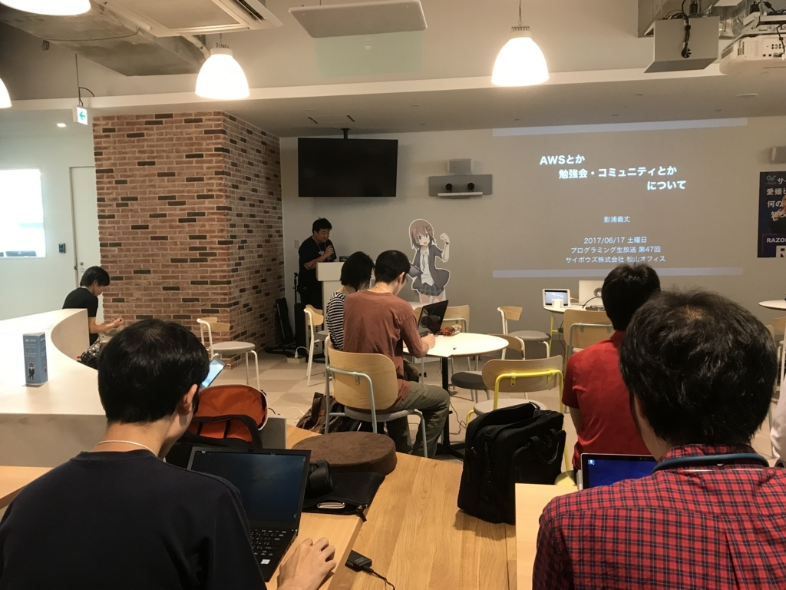
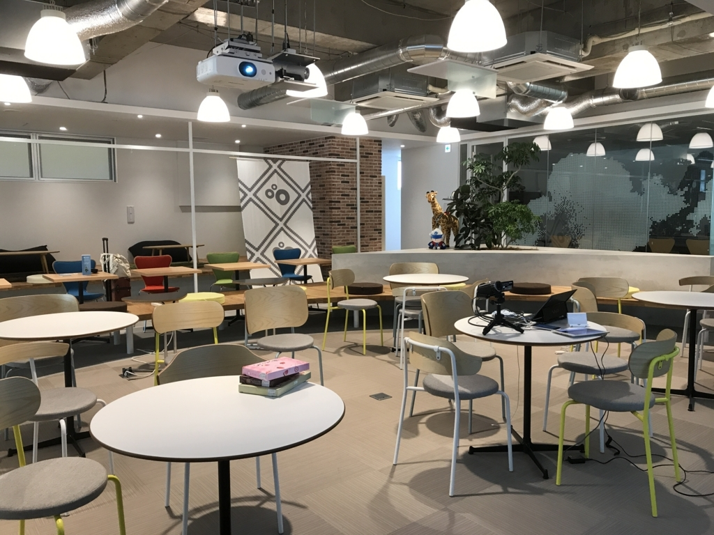
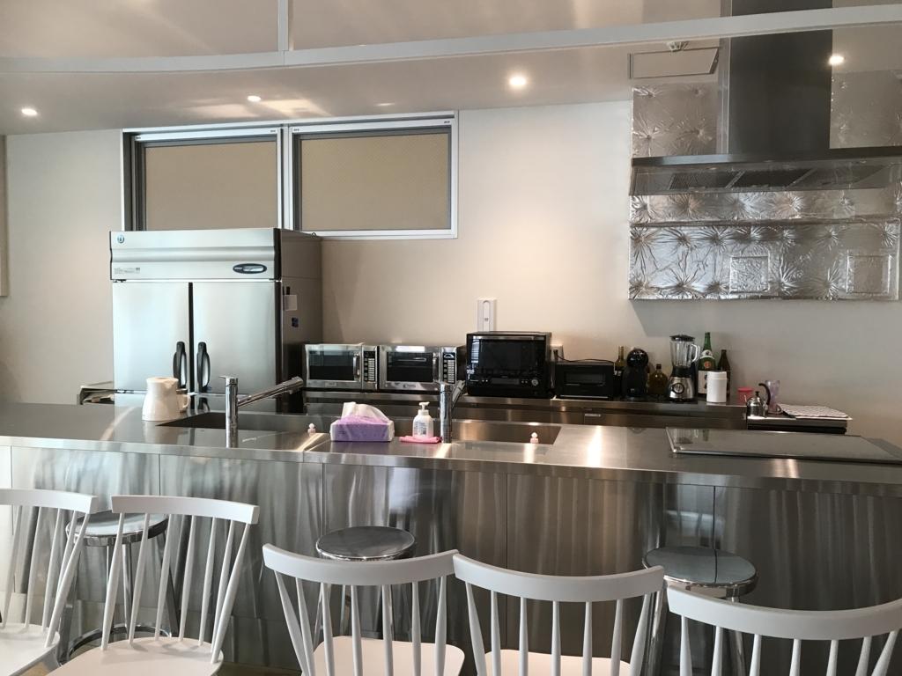
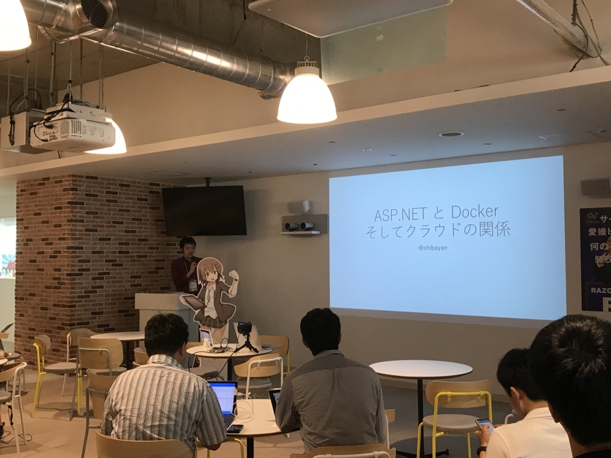
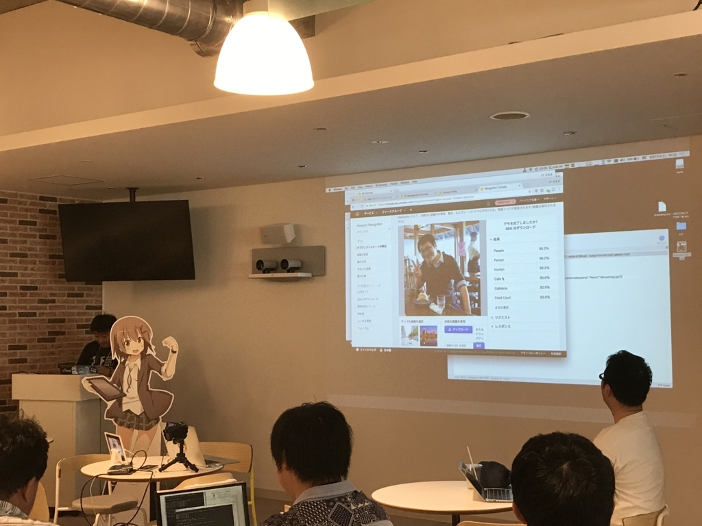
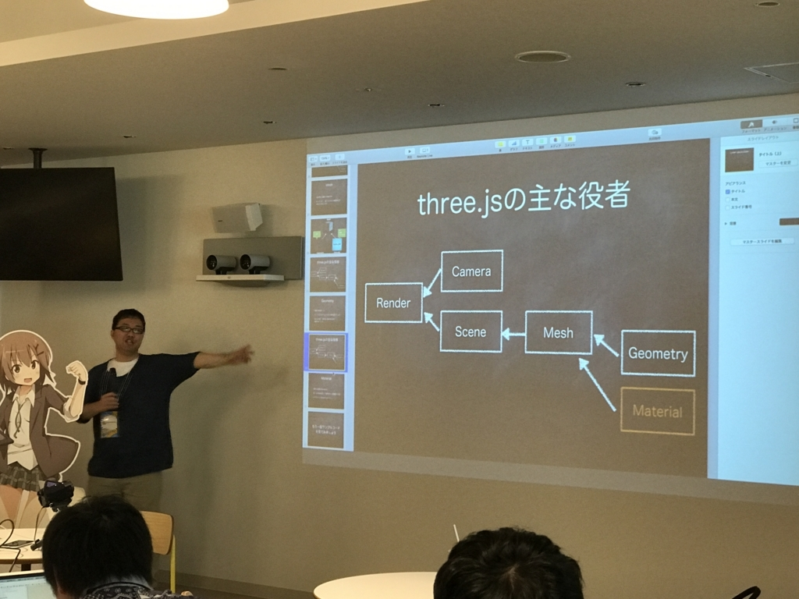
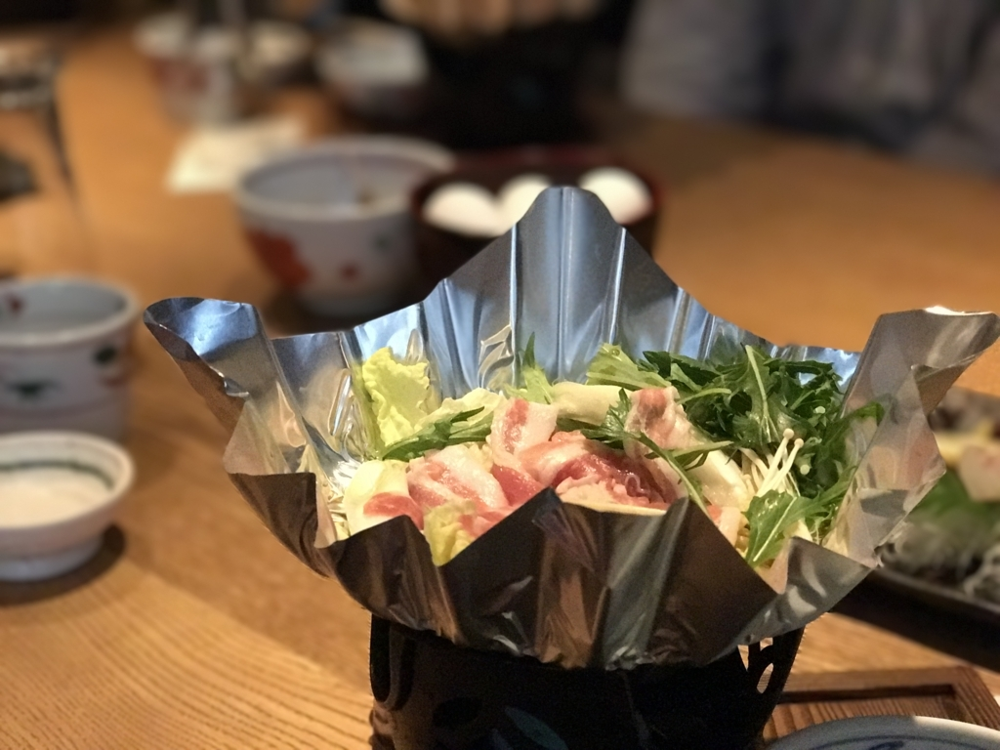

プログラミング生放送勉強会 第47回＠サイボウズ株式会社 松山オフィス に参加したった！
執筆日時：

今年も無事に開催＆終了できて安心しました。登壇者の方々、参加者の方々、視聴者の方々、ありがとうございました。場所を貸してくださいましたサイボウズさんにも感謝いたします。
参加者は35人（ATND ベース）で、そんなに欠席者もいなかったんじゃないかな？ よくわかんないけど。独断と偏見による単純計算で、東京の勉強会に換算すると 105 人の参加になるので、割とすごいなって感じです。
サイボウズさんの新しい松山オフィス

場所を移った（五志喜 本店の前 → 松山三越の裏）とは聞いていたのですが、実際に行ったのは初めて。Google ストリートビューで場所をチェックしたときはまだ更地でしたが、いい感じのビルが生えていました。中身もまっさらでキレイ。

ってか、おしゃれカフェかなんかですかね……すげぇ。こんなところで働いてたら、そら効率上がって、儲かりますわ。俺もスキルさえあれば入社したい。
セッション

トップバッターはしばやん（@shibayan）。「ASP.NET と Docker そしてクラウドの関係」でした。
正直、Docker は「インストールしたことはある」レベルでほとんどわかんないのですが、貴重な耳学問の機会です。Linux ではすっかり当たり前になった Docker も、Windows ではまだまだ“これから”のようですが――そろそろ真面目に取り組まないといけないのかも。Visual Studio × ASP.NET では Docker サポートが当たり前についているみたいなので、まとまった時間が取れたらやってみたいかな？

2番目は影浦さん（@manmarud）の「AWS とか 勉強会・コミュニティとか について」です。「少し入門向けの内容になるが」と事前に言われたのですが、AWS も S3 を少し使ったことがあった程度で（それもだいぶ昔）、AWS の現在をおさらいしたい僕のような人間には最適な感じでした。
とくに、だるやなぎ画像を認識してその情報を JSON で返すデモでは、だるやなぎがちゃんと“Person”と認識されていてうれしかったです。
それにしても AWS すげーな。Azure も最近キャッチアップしつつあるけど、まだまだ AWS にはかなわんね。「AWS をぜんぶ分かってるヤツなんか（ほとんど）いないから、自分が使うヤツから覚えていけばいい」っていうスタンスは、AWS を過剰に恐れていた僕にはありがたいお言葉。
愛媛・四国で開催されている勉強会の紹介も、これから勉強会に積極的に参加しようと思っている方には有用だったのではないでしょうか。僕個人の意見としては、勉強会は見聞を広めて、モチベーションを蓄える場所なので、実際に手を動かすハッカソンやディープなヤツよりは、（初心者でも）気軽に参加できるのがいいかなーって思います。言い換えれば、広く浅くなのがいいかな。
こちらのブログも、四国の勉強会がまとめられていてお薦めですよ。

3番目は takeuchi yuusuke さんの three.js 関連のロングトーク。強引な導入が印象的でした。
3D グラフィックスは Docker、AWS 以上に苦手というか、避けていた分野なのですが、そんなおっさんにも分かるぐらい優しい感じで助かりました。要は、パッと見複雑ですごいこと（フリーザ）をしているように見えるけど、分けて考えたら小さな役者（ヤムチャ）をそろえて組み合わせているだけだよ、簡単だよって感じ。JavaScript のパフォーマンスはぶっちゃけ信じていないのだけど、ブラウザーとエディターさえあれば挑戦できそうっていう手軽さは代えがたいかも。仮想現実もプレゼンスが増してきて、3D は避けて通れない感じがあるから、上級者の話を聞いて多少理解できる程度には勉強しなきゃね。
最後のみつばたん（@mitsuba_yu）のセッションは非公開なので省略。会場に来てくれた人に楽しんでもらえたならうれしいです。わざわざデカい荷物を担いで松山まで来てくれてありがとう。LT に参加してくれた人もありがとうございました。自分も参加してみたけど、最近プライベートに余裕がなかった＆思い付きで Misao をセットアップした関係で編集モードのパワポでプレゼンする羽目になり、ちょっと悲しかったデスｗ
懇親会

懇親会は移転したサイボウズさんの近所にある「銀次郎」さんでいただきました。大人数でも入れてとっても便利で、すき焼きもおいしゅうございました。プロ生松山の懇親会は毎年あちこち試していて、しっくりくるところを見つけられないでいたのですが、お値段が学生には少し厳しいかなという点以外は満足だったので、来年（やるなら！）もここに頼んでいいのではないかと思いました。
個人的なお話
愛媛支部長さまともお話していたのですが、そろそろ若い人にバトンタッチして、楽しむ側に回りたい……ｗ とくに今回は私事でいろいろあって配慮が至らないところがあった＆だいぶ疲れたので。
あと、参加ブログを書いてくれた人はぜひリンクさせていただきたいので、@daruyanagi にでも「リンク追加しろクソが」とでもメンションください。